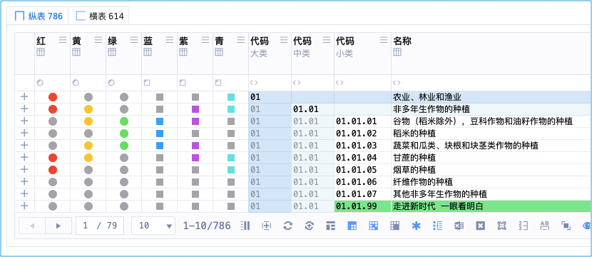
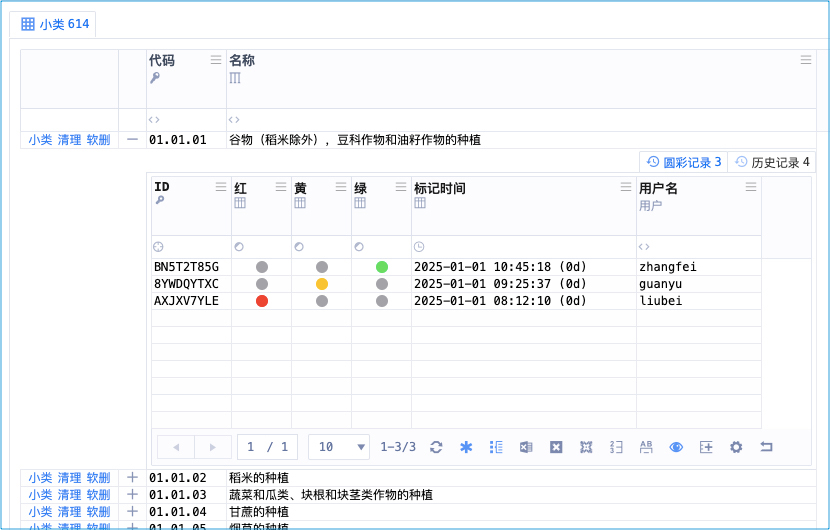

六彩神剑
简称：六彩
诗
《六彩神剑》
气彩入丹田，六彩神剑经。
圆彩红黄绿，方彩蓝紫青。
六彩神剑

此功能画面太多，图片不足以表现，抖音西瓜、微信的视频号，搜 ca3wBEST / ca3w麦修行 看视频
所有表格都有六彩：「圆彩、红黄绿、公用彩标」、「方彩、蓝紫青、私用彩标」
「圆彩、红黄绿、公用彩标」的搜索：
下拉选项，「彩」显示标为彩色的、「灰」显示未标的
「方彩、蓝紫青、私用彩标」的搜索：
搜索文本：
搜自己的，直接录入「彩」或者「灰」，还以方形显示
搜别人的，直接录入「<对方用户名>彩」或者「<对方用户名>灰」，会以心形显示
「彩」以方形显示自己标为彩色的、「灰」以方形显示自己未标的
「liubei彩」以心形显示刘备标为彩色的、「liubei灰」以心形显示刘备未标的
具体每个颜色代表什么，各认证机构需自己定义
公彩历史

公彩是有历史的，有权限的人可以看：谁在什么时间、标的什么颜色（避免捣乱）
现实世界
认证机构信息管理系统 中的 「彩标」（彩色标签）
武侠世界
大理世子 · 段思聪的独门武功
自学到什么程度
不太重要，想用就学，不想用就不学
术语对照
| 武学术语 | 系统术语 | 说明 |
|---|---|---|
| 六彩神剑 | 彩标、颜色标签 |
作者笔记
灵活运用六彩神剑，可以解决很多工作协作问题
尤其是一些工作流中的小标记，或临时数据挑选